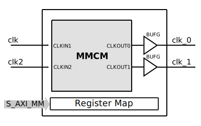

AXI ADC Trigger
The AXI ADC Trigger IP core implements triggering for the ADC path and also controls two I/O triggering pins.
More about the generic framework interfacing ADCs can be read here at Generic AXI ADC.
Features
AXI Lite control/status interface
Analog triggers, two channels
Greater than a limit
Lower than a limit
Passing through the limit, high
Passing through the limit, low
Digital triggers, two trigger pins
Low
High
Any edge
Rising edge
Falling edge
Mixing analog and digital triggers
Instrument trigger (from Logic Analyzer)
Controls two IO trigger pins
Files
Name |
Description |
|---|---|
Verilog source for the peripheral. |
Block Diagram
Submodules
Channel trigger
Channel A
Amplitude limit - LIMIT_A (0x0014) - Defines the threshold level for the ADC trigger
Function - TRIGGER_FUNCTION_A (0x0018) - Lower, higher than limit; pass-through limit
Hysteresis - TRIGGER_FUNCTION_A (0x001c) - “+-” value. Used for the pass-through functions
Channel B
Amplitude limit - LIMIT_A (0x0024) - Defines the threshold level for the ADC trigger
Function - TRIGGER_FUNCTION_A (0x0028) - Lower, higher than limit; pass-through limit
Hysteresis - TRIGGER_FUNCTION_A (0x002c) - “+-” value. Used for the pass-through functions
External trigger
Pin 0 (Ti) Configurations - CONFIG_TRIGGER_I (0x004) allows for:
falling edge (bit 8)
rising edge (bit 6)
any edge (bit 4)
high level (bit 2)
low level (bit 0)
Pin 1 (To) Configurations - CONFIG_TRIGGER_I (0x004) allows for:
falling edge (bit 9)
rising edge (bit 7)
any edge (bit 5)
high level (bit 3)
low level (bit 1)
Important
In the case of M2K, the trigger pins (Ti and To) are chosen one for input and one for output. This is for the ease of configuring a daisy-chain of M2Ks. Both pins can be configured as input or output using the IO_SELECTION register (0x000c).
Channel A MUX - TRIGGER_MUX_A(0x0020) - Selects between a combination of ADC trigger and the external trigger
Channel B MUX - TRIGGER_MUX_B(0x0030) - Selects between a combination of ADC trigger and the external trigger
Output MUX - TRIGGER_OUT_CONTROL(0x0034) - Selects a combination between the channel A and/or B MUX’s and the input of the instrument trigger
Holdoff counter (32 bit) - TRIGGER_HOLDOFF(0x0048) - Controls the trigger out silent period after an event.
Delay counter (32 bit) - TRIGGER_DELAY(0x0040) - Controls the trigger delay
External trigger control
IO_SELECTION(0x000c) - Controls the direction of the external trigger pins, and the source (for each pin configured as output)
TRIGGER_OUT_HOLD_PINS(0x004c) - Controls the hold period after a transition to a new logic level.
Configuration Parameters
Name |
Description |
Default Value |
Choices/Range |
|---|---|---|---|
SIGN_BITS |
Sign Bits. |
2 |
|
OUT_PIN_HOLD_N |
Out Pin Hold N. |
100000 |
Interface
Physical Port |
Logical Port |
Direction |
Dependency |
|---|---|---|---|
s_axi_awaddr |
AWADDR |
in [6:0] |
|
s_axi_awprot |
AWPROT |
in [2:0] |
|
s_axi_awvalid |
AWVALID |
in |
|
s_axi_awready |
AWREADY |
out |
|
s_axi_wdata |
WDATA |
in [31:0] |
|
s_axi_wstrb |
WSTRB |
in [3:0] |
|
s_axi_wvalid |
WVALID |
in |
|
s_axi_wready |
WREADY |
out |
|
s_axi_bresp |
BRESP |
out [1:0] |
|
s_axi_bvalid |
BVALID |
out |
|
s_axi_bready |
BREADY |
in |
|
s_axi_araddr |
ARADDR |
in [6:0] |
|
s_axi_arprot |
ARPROT |
in [2:0] |
|
s_axi_arvalid |
ARVALID |
in |
|
s_axi_arready |
ARREADY |
out |
|
s_axi_rdata |
RDATA |
out [31:0] |
|
s_axi_rresp |
RRESP |
out [1:0] |
|
s_axi_rvalid |
RVALID |
out |
|
s_axi_rready |
RREADY |
in |
Physical Port |
Logical Port |
Direction |
Dependency |
|---|---|---|---|
s_axi_aclk |
CLK |
in |
Physical Port |
Logical Port |
Direction |
Dependency |
|---|---|---|---|
s_axi_aresetn |
RST |
in |
Physical Port |
Logical Port |
Direction |
Dependency |
|---|---|---|---|
clk |
CLK |
in |
Physical Port |
Logical Port |
Direction |
Dependency |
|---|---|---|---|
reset |
RST |
in |
Physical Port |
Direction |
Dependency |
Description |
|---|---|---|---|
trigger_in |
in |
Instrument trigger input |
|
trigger_i |
in [1:0] |
External trigger input |
|
trigger_o |
out [1:0] |
Trigger output |
|
trigger_t |
out [1:0] |
Trigger T signal, controlling if pin is input or output |
|
data_a |
in [15:0] |
Analog data for channel A |
|
data_b |
in [15:0] |
Analog data for channel B |
|
data_valid_a |
in |
Data valid signal for channel A |
|
data_valid_b |
in |
Data valid signal for channel B |
|
data_a_trig |
out [15:0] |
Data with trigger embedded as most significant bit, channel A |
|
data_b_trig |
out [15:0] |
Data with trigger embedded as most significant bit, channel B |
|
data_valid_a_trig |
out |
Data valid for channel A |
|
data_valid_b_trig |
out |
Data valid for channel B |
|
trigger_out |
out |
Trigger out of the adc_trigger delayed by 4 clock cycles plus the trigger delay mechanism used with the variable FIFO for history (data before trigger) |
|
trigger_out_la |
out |
Trigger out of the adc_trigger delayed by 2 clock cycles, minimum delay possible for instrument trigger |
|
fifo_depth |
out [31:0] |
Controls the dynamic depth of the history FIFO |
Detailed Description
The AXI ADC Trigger core implements triggering for the ADC path. The trigger is generated based on two external trigger pins, a triggering signal from the logic analyzer and the ADC channels.
The external trigger pins are controlled by the core and can be both input or output. For external triggering, they must be set to inputs (independently).
The analog triggering is based on comparison with a limit. The data format must be in 2’s complement and the maximum number of bits of the analog channel is 15. The trigger can be transmitted independent or embedded in the output word, at bit 15. When embedded, the triggers must be extracted and data must be reconstructed, before forwarding the data to the DMA. The Util Extract IP core can be used for this purpose. Embedding the trigger in the data allows for additional IPs with unknown pipeline length to be introduced in the path.
If a history for data before the trigger is needed, a Util VAR FIFO should be used. The FIFO depth is controlled using the trigger_offset bus of this IP.
Register Map
DWORD |
BYTE |
Reg Name |
Description |
|||
|---|---|---|---|---|---|---|
BITS |
Field Name |
Type |
Default Value |
Description |
||
0x0 |
0x0 |
VERSION |
Version Register |
|||
[31:0] |
VERSION |
RO |
0x00030000 |
Version number |
||
0x1 |
0x4 |
SCRATCH |
Scratch Register |
|||
[31:0] |
SCRATCH |
RW |
0x00000000 |
Scratch register |
||
0x2 |
0x8 |
TRIGGER_O |
Control TRIGGER_O Value |
|||
[1] |
TRIGGER_O_1 |
RW |
0x0 |
Set TRIGGER_O_1 value |
||
[0] |
TRIGGER_O_0 |
RW |
0x0 |
Set TRIGGER_O_0 value |
||
0x3 |
0xc |
IO_SELECTION |
Control Trigger Pins Direction |
|||
[7:5] |
TRIGGER_O_1 |
RW |
0x0 |
Select output trigger pin 1 (To PIN): 0: SOFTWARE TRIGGER - TRRIGER_O_1(0x0004) 1: TRIGGER_I_1 (PIN) 2: TRIGGER_I_0 (PIN) 3: TRIGGER_OUT (axi_adc_trigger) 4: TRIGGER_IN (Logic analyzer) |
||
[4:2] |
TRIGGER_O_0 |
RW |
0x0 |
Select output trigger pin 0 (Ti PIN): 0: SOFTWARE TRIGGER - TRRIGER_O_0(0x0004) 1: TRIGGER_I_0 (PIN) 2: TRIGGER_I_1 (PIN) 3: TRIGGER_OUT (axi_adc_trigger) 4: TRIGGER_IN (Logic analyzer) |
||
[1] |
IO_SELECTION_1 |
RW |
0x0 |
Drives the TRIGGER_T[1](To) pin. |
||
[0] |
IO_SELECTION_0 |
RW |
0x0 |
Drives the TRIGGER_T[0](Ti) pin. |
||
0x4 |
0x10 |
CONFIG_TRIGGER_I |
Configure Digital Triggering |
|||
[9:8] |
FALL_EDGE |
RW |
0x0 |
Enable falling edge triggering for TRIGGER[0] or TRIGGER[1] pin. |
||
[7:6] |
RISE_EDGE |
RW |
0x0 |
Enable rising edge triggering for TRIGGER[0] or TRIGGER[1] pin. |
||
[5:4] |
ANY_EDGE |
RW |
0x0 |
Enable any edge triggering for TRIGGER[0] or TRIGGER[1] pin. |
||
[3:2] |
HIGH_LEVEL |
RW |
0x0 |
Enable high level triggering for TRIGGER[0] or TRIGGER[1] pin. |
||
[1:0] |
LOW_LEVEL |
RW |
0x0 |
Enable low level triggering for TRIGGER[0] or TRIGGER[1] pin. |
||
0x5 |
0x14 |
LIMIT_A |
Analog Trigger Level for Channel |
|||
[15:0] |
LIMIT_A |
RW |
0x0000 |
Analog trigger level for channel A. 2’s complement. |
||
0x6 |
0x18 |
FUNCTION_A |
Analog Triggering Function |
|||
[1:0] |
TRIGGER_FUNCTION_A |
RW |
0x0 |
Analog triggering function for channel A: 0: Lower than limit 1: higher than limit 2: pass through high limit 3: passthrough low limit |
||
0x7 |
0x1c |
HYSTERESIS_A |
Analog Trigger Hysteresis for Channel |
|||
[31:0] |
HYSTERESIS_A |
RW |
0x00000000 |
Used for the passthrough functions. |
||
0x8 |
0x20 |
TRIGGER_MUX_A |
Trigger Selection for Path |
|||
[3:0] |
TRIGGER_MUX_A |
RW |
0x0 |
Selects trigger a mode: 0: Always on 1: Digital triggering, based on trigger[0] 2: ADC triggering, based on channel A 3: Reserved 4: Digital triggering OR ADC triggering 5: Digital triggering AND ADC triggering 6: Digital triggering XOR ADC triggering 7: Option 4 negated 8: Option 5 negated 9: Option 6 negated |
||
0x9 |
0x24 |
LIMIT_B |
Analog Trigger Level for Channel |
|||
[15:0] |
LIMIT_B |
RW |
0x0000 |
Analog trigger level for channel B. 2’s complement. |
||
0xa |
0x28 |
FUNCTION_B |
Analog Triggering Function |
|||
[1:0] |
TRIGGER_FUNCTION_B |
RW |
0x0 |
Analog triggering function for channel B: 0: Lower than limit 1: higher than limit 2: pass through high limit 3: passthrough low limit |
||
0xb |
0x2c |
HYSTERESIS_B |
Analog Trigger Hysteresis for Channel |
|||
[31:0] |
HYSTERESIS_B |
RW |
0x00000000 |
Used for the passthrough functions. |
||
0xc |
0x30 |
TRIGGER_MUX_B |
Trigger Selection for Path |
|||
[3:0] |
TRIGGER_MUX_B |
RW |
0x0 |
Selects trigger a mode: 0: Always on 1: Digital triggering, based on trigger[0] 2: ADC triggering, based on channel B 3: Reserved 4: Digital triggering OR ADC triggering 5: Digital triggering AND ADC triggering 6: Digital triggering XOR ADC triggering 7: Option 4 negated 8: Option 5 negated 9: Option 6 negated |
||
0xd |
0x34 |
TRIGGER_OUT_CONTROL |
Selection Multiplexer and embedded trigger selection |
|||
[16] |
EMBEDDED_TRIGGER |
RW |
0x0 |
When set the bit 15 of the out channel data will be the trigger. This allows to keep the data in sync with the trigger in future data processing, before feeding the data to the DMA. When set a util_extract module is required in the system. |
||
[3:0] |
TRIGGER_MUX_OUT |
RW |
0x0 |
Final Trigger Selection Multiplexer. Selects trigger a mode: 0: Trigger A 1: Trigger B 2: Trigger A OR Trigger B 3: Trigger A AND Trigger B 4: Trigger A XOR Trigger B 5: Trigger LA 6: Trigger A OR Trigger LA 7: Trigger B OR Trigger LA 8: Trigger A OR Trigger B OR Trigger LA |
||
0xe |
0x38 |
FIFO_DEPTH |
Controls the Dynamic Depth of the History FIFO |
|||
[31:0] |
FIFO_DEPTH |
RW |
0x00000000 |
Controls the depth of the history FIFO. Should be less than the maximum FIFO depth. If set to 0, the FIFO is bypassed. |
||
0xf |
0x3c |
TRIGGERED |
Indicates Triggering Status |
|||
[1] |
TRIGGERED |
RW1C |
0x0 |
Indicates if the trigger has been triggered since the last time this register has been reset. |
||
0x10 |
0x40 |
TRIGGER_DELAY |
Control the Trigger Delay |
|||
[31:0] |
TRIGGER_DELAY |
RW |
0x00000000 |
Delays the start of data capture with TRIGGER_DELAY number of samples after the trigger. |
||
0x11 |
0x44 |
STREAMING |
Controls Streaming Mode |
|||
[0] |
STREAMING |
RW |
0x0 |
If the streaming bit is set, after the trigger condition is met data will be continuously captured by the DMA. The streaming bit must be set to 0 to reset triggering. |
||
0x12 |
0x48 |
TRIGGER_HOLDOFF |
Controls hold off time |
|||
[31:0] |
TRIGGER_HOLDOFF |
RW |
0x00000000 |
Defines the time interval, after a trigger event, where the next trigger events will be ignored, until the end of the interval. The time interval is set by counter. Down-counting on the ADC clock(100MHz). The value written in the register is loaded in the counter at a trigger event. |
||
0x13 |
0x4c |
TRIGGER_OUT_HOLD_PINS |
Controls external trigger hold time |
|||
[1] |
TRIGGER_OUT_HOLD_PINS |
RW |
0x0 |
Defines a time period, in which the external trigger pins, configured as outputs, will hold the new logic level after a transition. The down-counter, counting on ADC clock, is loaded with the value written in the register after a new transition of the source trigger signal, if the counter is inactive. |
||
Access Type |
Name |
Description |
|---|---|---|
RO |
Read-only |
Reads will return the current register value. Writes have no effect. |
RW |
Read-write |
Reads will return the current register value. Writes will change the current register value. |
RW1C |
Read,write-1-to-clear |
Reads will return the current register value. Writing the register will clear those bits of the register which were set to 1 in the value written. Bits are set by hardware. |
References
HDL IP core at library/axi_adc_trigger